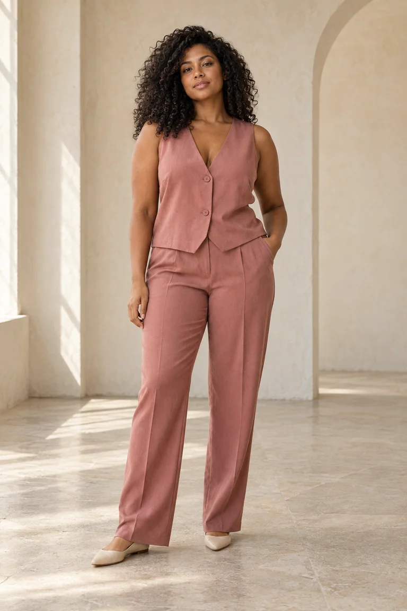
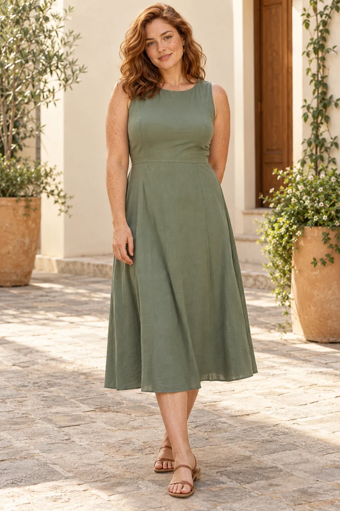
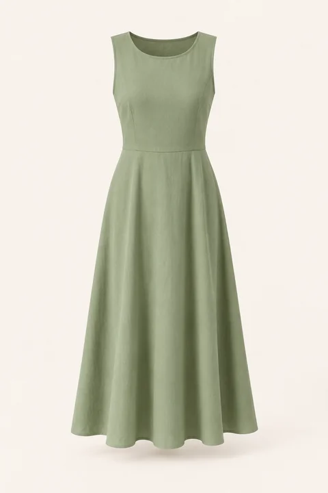
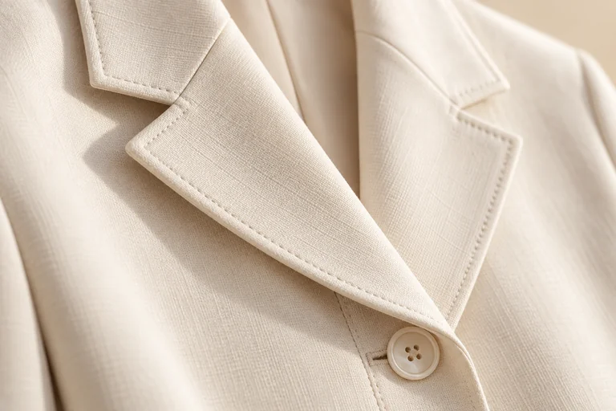
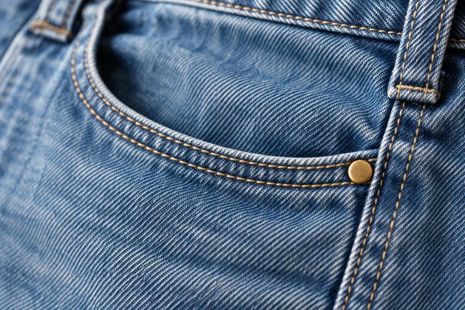

Dias leves
Camiseta clara, jeans amplo e nada para ajustar o dia inteiro. Básicos que voltam em outras combinações.

Coleção demonstrativa · casual, jeans e alfaiataria
Peças para combinar de novo, do seu jeito.


Peças do look
Coleção
Peças e preços ilustrativos. Não há vendas nesta demonstração.
Nenhuma peça com esses filtros.
Os produtos da demonstração não têm todas as combinações de categoria, ocasião e tamanho.
Ocasiões
Camiseta clara, jeans amplo e nada para ajustar o dia inteiro. Básicos que voltam em outras combinações.
Blazer creme, blusa vinho e calça de pregas. Tira o blazer no fim da tarde e o look muda de lugar.
Vestido midi sálvia, sandália rasteira e um passeio sem pressa. Para almoço, feira ou fim de tarde.


Looks combináveis
De perto
Uma vitrine própria pode mostrar o acabamento antes da conversa com a loja. Os closes são ilustrativos e não comprovam composição de tecido.


Sobre esta vitrine
VÉRIA é uma marca fictícia criada pela Rabik para demonstrar uma vitrine de moda feminina com curadoria visual e navegação por peças. Fotografias, nomes, tamanhos e preços são exemplos.
Favoritos e seleção ficam só neste navegador. Não representam pedido, pagamento, reserva ou estoque.
Não. É uma demonstração criada pela Rabik.
Não há vendas. Os produtos são exemplos.
Sim, com materiais fornecidos ou autorizados pela loja.
Sim. O projeto pode ser adaptado ao catálogo real.
Não. Uma vitrine pode organizar as peças antes de encaminhar uma consulta ao atendimento.
É possível desenvolver essa opção. Painel e operação são definidos à parte, no orçamento.
Uma demonstração da Rabik
A Rabik cria sites com a identidade, as peças e as informações do seu negócio.
Conversar sobre um site para minha loja